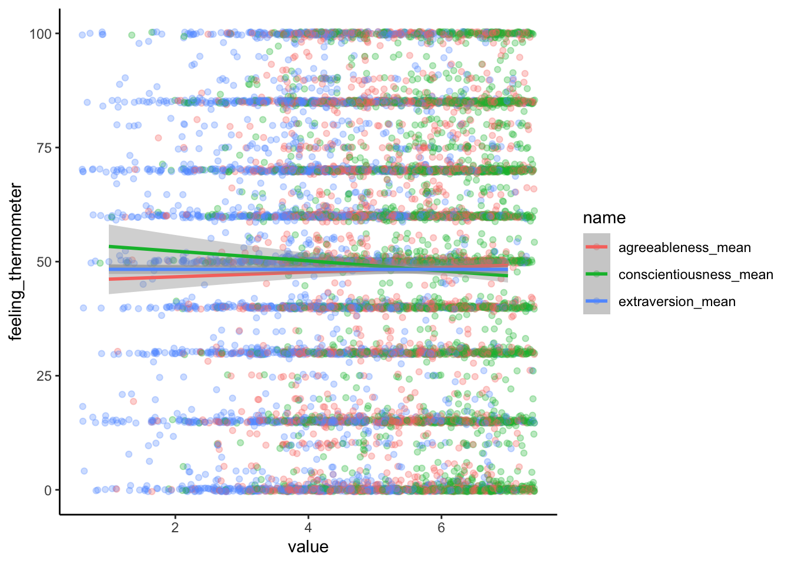

Visualize relationships between predictors and outcome
Compute your regression model
Interpret the findings
Visualization
Previously, we visualized a bivariate correlation using a scatterplot. One way of visualizing a regression when the predictors are all measured on the same scale (as they are in this project) is to essentially produce several scatterplots overlaid on top of one another. The outcome variable will always be on the Y axis, and the values of the predictors on the X axis. Color (or some other aesthetic) is used to differentiate the different predictors.
This can be achieved by reshaping the data into long-format as we have done before. Here, however, as a parameter in pivot_longer() I specify -feeling_thermometer, meaning I want every column except the feeling thermometer to be pivoted longer. That keeps feeling_thermometer as a unique column of its own, duplicating its value across rows for each of the three predictor variables. The reshaped data can then be piped into ggplot().
Don't know how to automatically pick scale for object of type <haven_labelled>.
Defaulting to continuous.
`geom_smooth()` using formula = 'y ~ x'

This kind of visualization doesn’t map on to the regression model perfectly; it essentially shows three bivariate correlations, while the regression model, in quantifying the relationship between each predictor and the outcome, also controls for the relationship between the predictor and the other predictors in the model. And with more than 3 or so predictors it can get visually messy and hard to easily interpret. For this project’s design, however, it seems an appropriate choice.
Analysis
Computing regression in R
Now we’ll compute the regression model. The model quantifies the relationship between the single outcome variable (in this case, feeling_thermometer) and several independent variables (extraversion_mean, conscientiousness_mean, and agreeableness_mean).
The lm() function compute a linear model. The first argument is a formula with the generic form outcome ~ predictor_1 + predictor_2 + predictor_3 ..., where those generic names will be replaced with the relevant column names from your data.frame. The second argument is data; the formula specifies the names of columns in a data.frame where the relevant values can be found, therefore the data = argument is necessary to point R to the data.frame containing those columns.
By itself, the lm() function doesn’t output all the information we need to report about the regression model. That’s why I pipe the output of lm() into the summary() function, which outputs all the necessary information to the console.
Call:
lm(formula = feeling_thermometer ~ extraversion_mean + conscientiousness_mean +
agreeableness_mean, data = my_data_complete)
Residuals:
Min 1Q Median 3Q Max
-54.523 -24.494 2.127 22.216 55.932
Coefficients:
Estimate Std. Error t value Pr(>|t|)
(Intercept) 51.218290 3.342704 15.322 < 2e-16 ***
extraversion_mean -0.006588 0.369615 -0.018 0.985780
conscientiousness_mean -1.633627 0.476950 -3.425 0.000621 ***
agreeableness_mean 1.234787 0.465963 2.650 0.008086 **
---
Signif. codes: 0 '***' 0.001 '**' 0.01 '*' 0.05 '.' 0.1 ' ' 1
Residual standard error: 29.96 on 3526 degrees of freedom
Multiple R-squared: 0.00422, Adjusted R-squared: 0.003373
F-statistic: 4.981 on 3 and 3526 DF, p-value: 0.001893
Interpreting the results
Under “Coefficients” you’ll see an “Estimate” of the relationship between that predictor and the outcome variable, controlling for the other predictors. You’ll also see a \(t\)-value and a \(p\)-value for each predictor, which tell you whether each predictor is significantly related to the outcome variable, controlling for the other predictors. The Estimate indicates how much the outcome variable changes on average with a one-unit increase in the predictor, holding all other predictors constant. So in this example, a one-point increase in conscientiousness predicts a \(~1.6\) unit decrease on the feeling thermometer. A one-point increase in agreeableness predicts a \(~1.2\) unit increase on the feeling thermometer. Both of these predictors are significantly associated with the feeling thermometer variable. Extraversion, however, is not a significant predictor; knowledge of somebody’s extraversion score cannot reliably predict their feeling thermometer response.
The last part of the output gives the overall model fit. “Multiple R-squared” is the proportion of variance in the outcome variable that can be explained by the predictor variables, and Adjusted R-squared is a version of R-squared adjusted for the number of predictors.
Finally, the \(F\)-statistic and its corresponding \(p\)-value assess the overall statistical significance of the model. If the \(p\)-value is less than your desired significance level you can reject the null hypothesis that all the regression coefficients are zero.